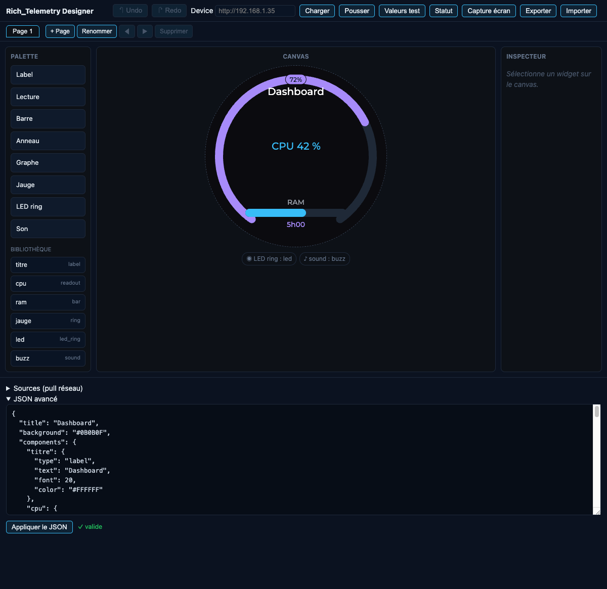
Dialboard
Un dashboard que l'on décrit, pas que l'on code.
1Présentation & principes¶
Dialboard transforme le Guition K718 en afficheur de télémétrie piloté entièrement par un document JSON. On ne code pas l'écran : on décrit des composants et leur placement sur des pages, et le firmware s'occupe du rendu — avec anneau LED physique, buzzer, et un éditeur WYSIWYG web.
Les cinq principes
- Components ≠ pages.
componentsest une mapid → définition(type + style + config), sans position. La position vit danspages[].place[]. Un mêmeidplacé sur plusieurs pages n'existe qu'une fois : son état (valeur) est partagé. - Deux façons d'alimenter une valeur. Push : on POST une valeur par
idsur/update. Pull : le device interroge lui-même dessourcesHTTP et un composantbind:"var"lit la variable. - Le schéma est la source de vérité.
schema/layout.schema.jsondéfinit le contrat partagé entre le firmware (consommateur) et le designer (producteur). Le firmware est tolérant (il ignore les clés inconnues) ; le schéma est volontairement strict pour attraper les fautes de frappe côté éditeur. - Le device est l'arbitre du rendu. Le designer offre un aperçu « best-effort » (2e implémentation du rendu) ; en cas d'écart, c'est l'écran réel qui fait foi.
- Persistance transparente. Tout layout poussé via
POST /layoutest validé, échangé à chaud, puis sauvegardé en LittleFS et rechargé au boot.
Matériel. Écran rond 360×360 (ST77916 QSPI, RGB565), encodeur rotatif, tactile CST816, anneau de 13 LED WS2812, buzzer/DAC. Navigation entre pages : molette, swipe latéral, ou REST.
2Démarrage rapide¶
WiFi
Les identifiants ne sont pas commités — copie le modèle et renseigne ton réseau :
cd src
cp secrets.h.example secrets.h # édite WIFI_SSID / WIFI_PASSBuild & flash (depuis la racine du monorepo)
./build.sh guition_knob Dialboard # build seul
./build.sh auto Dialboard --upload # build + flash (auto-détecte la carte)Trouver le device
Au boot, l'IP est imprimée sur le port série ([wifi] IP=…). Le mDNS guition.local existe mais est
souvent filtré sur les LAN ; en cas de doute, utilise l'IP DHCP directe.
curl http://<ip>/status # ip, uptime, page courante, pages, composants
curl http://<ip>/screenshot -o shot.bmp # capture pixel-perfect de l'écran3Modèle de layout (JSON)¶
Le layout est un objet avec deux clés requises (components, pages) et des clés optionnelles.
| Clé | Type | Rôle |
|---|---|---|
title | string | Titre du dashboard (défaut ""). |
background | #RRGGBB | Couleur de fond (défaut #000000). |
nav | object | {"wrap":true} — navigation circulaire (dernière → première). Défaut true. |
components | map | Requis. id → définition. Aucune position ici. |
pages | array | Requis. Liste ordonnée de pages { name, place[] }. |
sources | array | Pull réseau (≤ 6). Voir §5. |
Placement & géométrie
Chaque entrée de place référence un composant par ref et porte sa géométrie. Les champs utiles dépendent du type :
| Champ | S'applique à | Description |
|---|---|---|
ref | tous | Requis. id d'un composant déclaré. Doit résoudre, sinon le layout est rejeté. |
anchor | label, readout, bar, chart, meter | Ancrage LVGL (défaut CENTER). 9 valeurs : CENTER, TOP_MID, BOTTOM_MID, LEFT_MID, RIGHT_MID, TOP_LEFT, TOP_RIGHT, BOTTOM_LEFT, BOTTOM_RIGHT. |
dx / dy | idem | Offset (px) depuis l'ancrage (défaut 0). |
width / height | bar, chart, meter | Dimensions (px). |
radius / thickness | ring | Rayon et épaisseur de bande. Concentriques = même centre, radius différents. |
gap_deg / start_angle | ring | Angle d'ouverture (défaut 70) et son orientation (horaire depuis le bas : 0=bas, 90=gauche, 180=haut, 270=droite). |
Le ring est toujours centré. Le firmware fait lv_obj_center : pour un anneau,
anchor/dx/dy sont ignorés (seuls radius/thickness/gap_deg/start_angle comptent).
led_ring et sound n'ont aucune géométrie (composants physiques).
Conventions de valeurs
- Couleurs : format
#RRGGBBuniquement. - Polices : énumération
14 | 20 | 28 | 36 | 48(défaut 20). Une valeur intermédiaire est arrondie à la taille inférieure disponible. - Texte ASCII :
text,label,unitdoivent rester ASCII (polices Montserrat embarquées). Utilise%,GB,C,Mbps…
4Les composants¶
Huit types. Les six premiers se dessinent à l'écran (capture device à l'appui) ; led_ring et sound
sont physiques. La colonne « /update » donne la forme de la valeur à pousser sur POST /update.
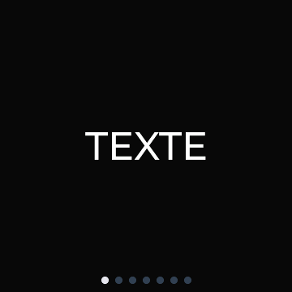
label — texte
Texte statique (ou remplacé via /update avec une string).
| Config | text, font, color, bind |
|---|---|
/update | string (optionnel) |
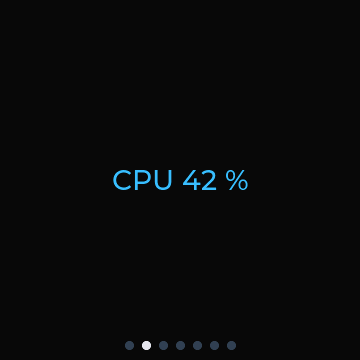
readout — lecture chiffrée
Affiche label valeur unité (ex. « CPU 42 % »).
| Config | label, unit, font, color, bind |
|---|---|
/update | nombre ou string |
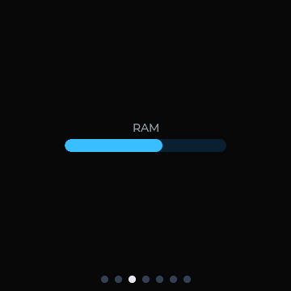
bar — barre de progression
Barre horizontale ; le label s'affiche centré au-dessus. Dimensions via width/height.
| Config | label, min, max, color, bind |
|---|---|
/update | nombre |
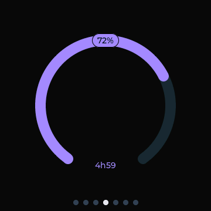
ring — anneau
Anneau avec ouverture en bas (orientable). Deux habillages du centre/bande :
center_pct: grande valeur au centre (taille =font).countdown: décrémentereset_in_s(1/s) et l'affiche (1h50,5j6h,45s).
| Config | color, font, center_pct, center_color, countdown, min, max, thresholds, bind |
|---|---|
| Géométrie | radius, thickness, gap_deg, start_angle |
/update | { "pct": 0-100, "reset_in_s": N, "caption": "…" } — chaque champ optionnel |
Seuils (thresholds) : liste [[limite, "#hex"], …] ; la couleur s'applique quand la valeur passe
sous la limite, sinon color. Concentriques : deux anneaux de même centre, radius différents.
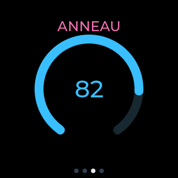
center_pct sur un dashboard réel (valeur centrale « 82 »).device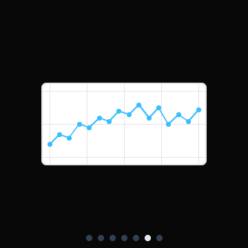
chart — graphe d'historique
Courbe d'historique (lv_chart LINE). L'historique vit dans le device : chaque /update pousse
un scalaire (ajout d'un point, fenêtre glissante).
| Config | color, min, max, points (≤ 60), bind |
|---|---|
| Géométrie | width, height, anchor, dx, dy |
/update | scalaire (append) |
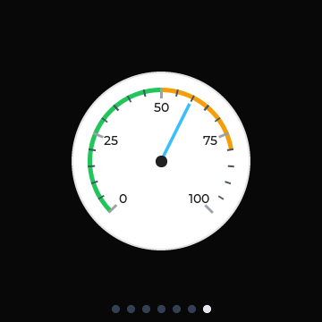
meter — jauge à aiguille
Jauge analogique (lv_meter, arc 270°) à graduations chiffrées. Les thresholds sont réutilisés
en zones d'arc colorées.
| Config | color (aiguille), min, max, thresholds, bind |
|---|---|
| Géométrie | width, height, anchor, dx, dy |
/update | scalaire (aiguille) |
image — bitmap statique
Bitmap statique placé sur une page, redimensionnable librement (l'image peut être déformée). Choisir un fichier dans l'inspecteur : le navigateur le convertit en RGB565A8 (transparence des PNG conservée) à la taille du composant et l'envoie au device au « Pousser ». La taille est portée par le composant : la même image placée sur plusieurs pages s'affiche à une taille unique. Plafond : 360×360 px. Après rechargement du designer depuis le device, un redimensionnement repart de la version déjà rastérisée (qualité réduite) — re-choisir le fichier pour la pleine qualité.
| Config | src (clé d'asset, posée automatiquement au choix du fichier) |
|---|---|
| Géométrie | w, h (taille en pixels, ajustées par les poignées de redimensionnement), anchor, dx, dy |
/update | — |
image_anim — image animée
Séquence d'images animées placée sur une page. Le navigateur accepte un GIF animé (les frames sont
extraites et la période moyenne est importée) ou une série d'images triées par nom. Chaque frame est
convertie en RGB565A8 et toutes sont empaquetées en un unique fichier
/aimg/<clé>.565p (N frames concaténées, envoyé au device à l'import).
La taille (w, h) et le nombre de frames (frames) sont portés par
le composant. Limites : 32 frames max, pack ≤ ~1,5 Mo par composant (RGB565A8 = 3 octets/pixel).
| Config |
src (clé du pack, posée automatiquement à l'import),
w, h (dimensions d'une frame en pixels),
frames (nombre de frames),
period (ms inter-frame par défaut, défaut 100),
rest_frame (frame affichée au repos, défaut 0),
loop (nb de passes par défaut, 0 = infini),
autoplay (démarre au chargement, défaut false),
bind
|
|---|---|
| Géométrie | w, h, anchor, dx, dy |
/update | objet JSON — affichage, lecture ou arrêt (voir exemples ci-dessous) |
Pilotage à l'exécution via POST /update :
{ "<id>": { "frame": 2 } } // affiche la frame 2 et stoppe l'animation
{ "<id>": { "play": true, "loop": 3, "period": 80 } } // joue 3 fois à 80 ms/frame (loop et period optionnels = défauts du composant)
{ "<id>": { "stop": true } } // stoppe et retombe sur la frame de reposloop: 0 joue en boucle infinie jusqu'à un stop explicite.
loop et period omis dans play = défauts du composant.
bind : si défini, la variable liée sélectionne la frame affichée au repos
(clampée à 0..frames-1 ; ex. un booléen 0/1 pour un indicateur marche/arrêt).
Elle est ignorée pendant la lecture d'une animation.
led_ring — anneau LED physique physique
Commande l'anneau de 13 WS2812. Config : color, brightness (0-255, défaut 64).
Pas de géométrie. Mode & valeur via /update :
{ "mode": "progress", "value": 42, "color": "#38BDF8", "brightness": 128, "period_ms": 500 }Modes : off, solid, progress, spinner, blink, breathe.
sound — buzzer physique
Tir unique, pas de config ni de géométrie. Déclenché via /update sous deux formes :
{ "tone": 880, "ms": 200 } // fréquence + durée
{ "name": "ok" } // ok | alert | error5Push & Pull (bind, sources)¶
Deux modèles d'alimentation, combinables.
Push — pousser par id
Par défaut, on POST des valeurs sur /update, keyées par id de composant (cf. §6). Simple,
piloté depuis l'extérieur.
Pull — le device va chercher la donnée
Un composant peut porter bind:"nom_de_variable" : il lit alors une variable du contexte au lieu d'être
poussé par id. Le contexte est alimenté par des sources (ou manuellement via POST /context).
| Champ source | Description |
|---|---|
name | Libellé (apparaît dans GET /status). |
url | Requis. URL HTTP(S) à interroger. |
interval_s | Période de fetch (≥ 5 s, défaut 60). |
headers | En-têtes HTTP. Une valeur "$nom" référence un secret du store write-only (résolu au fetch). |
vars | Map variable → JSON Pointer (RFC 6901, ex. "/main/temp") extrait de la réponse. |
"sources": [{
"name": "meteo",
"url": "https://api.exemple.com/weather?city=paris",
"interval_s": 300,
"headers": { "Authorization": "Bearer $weather_key" },
"vars": { "temp": "/main/temp", "hum": "/main/humidity" }
}]Un composant { "type":"readout", "bind":"temp", "unit":"C" } affichera alors la température extraite.
Secrets. Les clés d'API ne sont jamais dans le layout. On les pose via
POST /secrets (store write-only : jamais relu) et on les référence par $nom dans headers.
6API REST¶
Serveur HTTP port 80. CORS activé (Allow-Origin: *, préflight OPTIONS → 204) pour que le designer
web puisse pousser depuis un navigateur — adapté à un usage LAN mono-utilisateur.
| Méthode | Route | Rôle & corps |
|---|---|---|
| POST | /update | MAJ partielle des valeurs. Corps { "id": valeur, … }. Réponse { "ok":true, "updated":N, "unknown":[…] }. |
| POST | /layout | Remplace le layout (validé puis persisté). { "ok":true } ou 400 + message. |
| GET | /layout | Layout actif (JSON). |
| POST | /context | Pousse des variables de contexte (pour les bind). Corps { "var": nombre|string, … }. |
| POST | /secrets | Store de secrets write-only. Corps { "nom": "valeur", … }. Ne renvoie jamais le contenu. |
| GET | /status | ip, hostname, rssi, uptime_s, page, pages, composants, état des sources. |
| POST | /page | Navigation : {"dir":"next"|"prev"}, {"index":N} ou {"name":"…"}. 404 si hors plage/inconnu. |
| GET | /screenshot | Capture pixel-perfect de l'écran actif (image/bmp 24-bit). Voir §8. |
| GET | / | Page d'aide HTML. |
Exemples
# Pousser plusieurs valeurs d'un coup (mono + multi)
curl -X POST http://<ip>/update -H 'Content-Type: application/json' \
-d '{"cpu":42,"w5h":{"pct":63,"reset_in_s":6600},"led":{"mode":"solid","color":"#22C55E"}}'
# Changer de page par nom
curl -X POST http://<ip>/page -H 'Content-Type: application/json' -d '{"name":"usage"}'
# Pousser un layout complet
curl -X POST http://<ip>/layout -H 'Content-Type: application/json' --data-binary @layout.jsonDans un objet /update, chaque champ est optionnel : un champ absent conserve sa valeur précédente.
Tout id inconnu est ignoré et renvoyé dans "unknown".
7Le designer (WYSIWYG)¶
Le designer est une web app statique autonome (aucune dépendance, aucun build) pour concevoir le layout visuellement et le pousser au device. Il ne touche pas au firmware.
La vue d'ensemble en tête de ce manuel montre ses zones : palette (les 8 types) & bibliothèque (composants réutilisables), canvas WYSIWYG, inspecteur, onglets de pages, panneau Sources et JSON avancé. En sélectionnant un widget, l'inspecteur expose ses propriétés, sa géométrie et sa valeur d'aperçu :
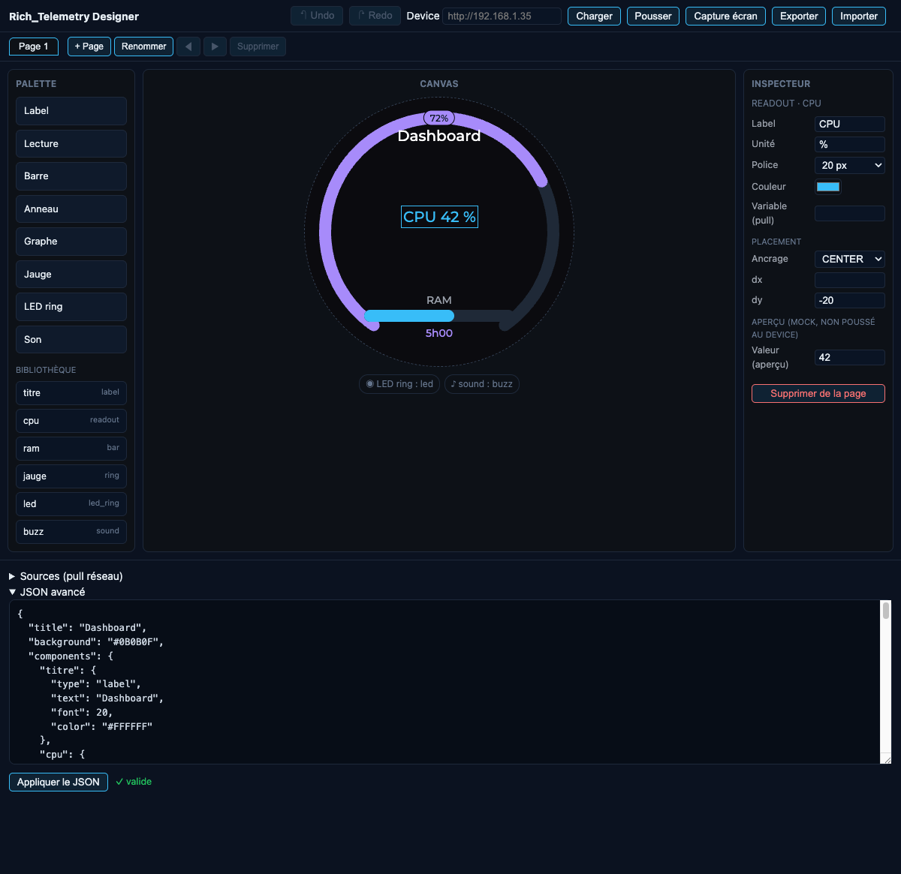
Lancer
Le plus simple — servi par le device. Une fois le firmware flashé avec son image LittleFS
(tools/stage_fs.sh puis pio run -e esp32s3 -t uploadfs), le designer est servi directement
par le device à http://<ip>/designer/ : même origin — aucun CORS, aucun serveur local.
En local (édition hors device). Le designer charge le schéma partagé via ../schema/… : servir
depuis le dossier parent Dialboard/ (pas depuis designer/), sans file:// :
cd devices/guition_knob/projects/Dialboard
python3 -m http.server 8000
# puis http://localhost:8000/designer/Le travail est auto-sauvegardé (localStorage) entre les sessions ; Exporter / Importer reste le filet fichier.
Flux de travail — un cockpit pour le device
- Charger/Pousser :
GET/POST /layoutvers le device (champ Device). - Valeurs test : pousse les valeurs d'aperçu (mocks) au device (
POST /update) — live preview du vrai rendu. - Statut : santé du device + état des sources de pull (
GET /status) dans une barre sous l'en-tête. - Capture écran : rendu réel du device (§8) ; les flèches ◀ ▶ de l'aperçu naviguent les pages du device (
POST /page) et recapturent. - Exporter/Importer :
layout.jsonlocal (filet indépendant du device). - Validation live (ajv) + messages humanisés, avertissements non bloquants (limites firmware,
bindsans source) ; Undo/Redo.
Aperçu indicatif, pas pixel-exact. Le canvas est une 2e implémentation du rendu firmware :
les valeurs affichées sont des mocks (remplacées par /update à l'exécution), positions et polices approchées.
Le device reste l'arbitre.
8Capture d'écran du device¶
L'endpoint GET /screenshot renvoie une capture pixel-perfect de l'écran actif, encodée en BMP 24-bit
(360×360). Le rendu est re-généré à la demande via lv_snapshot (aucun coût permanent). Le bouton
Capture écran du designer l'affiche directement.
curl http://<ip>/screenshot -o shot.bmp && file shot.bmp # "PC bitmap ... 360 x 360 x 24"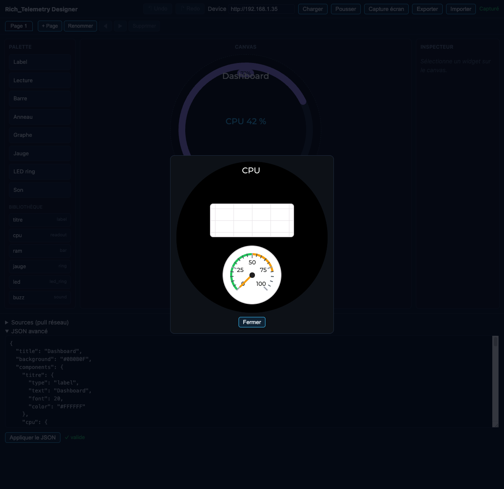
9Limites & persistance¶
| Limite | Valeur |
|---|---|
| Pages | 8 max |
| Composants | 32 max |
| Placements / page | 12 max |
| Points de chart | 60 max |
| Sources (pull) | 6 max |
| Texte | ASCII uniquement |
Persistance. Le layout poussé est sauvegardé en LittleFS et rechargé au boot. Sans layout sauvegardé (ou si
invalide), le firmware retombe sur le layout par défaut compilé. data/layout.json peut servir de point de départ
flashable via ./build.sh guition_knob Dialboard --uploadfs.
Navigation. Molette (CW = page suivante), swipe latéral, ou POST /page. Circulaire si nav.wrap.
Un indicateur de points en bas signale la page active (si > 1 page).
Tests. Firmware : pio test -e native (logique pure, sans device). Designer : node --test
(math de rendu + validation).
10Exemple complet¶
Un dashboard 2 pages : une page « système » (readout + bar + chart) et une page « charge » (meter), avec fond et titre.
{
"title": "Système",
"background": "#0B0B0F",
"components": {
"cpu": { "type": "readout", "label": "CPU", "unit": "%", "font": 28, "color": "#38BDF8" },
"ram": { "type": "bar", "label": "RAM", "min": 0, "max": 100, "color": "#38BDF8" },
"hist": { "type": "chart", "color": "#38BDF8", "min": 0, "max": 100, "points": 30 },
"load": { "type": "meter", "color": "#F59E0B", "min": 0, "max": 100,
"thresholds": [[50, "#22C55E"], [80, "#F59E0B"]] }
},
"pages": [
{ "name": "sys", "place": [
{ "ref": "cpu", "anchor": "TOP_MID", "dy": 40 },
{ "ref": "ram", "anchor": "CENTER", "width": 200, "height": 16 },
{ "ref": "hist", "anchor": "BOTTOM_MID", "dy": -40, "width": 220, "height": 80 }
]},
{ "name": "charge", "place": [
{ "ref": "load", "anchor": "CENTER", "width": 200, "height": 200 }
]}
]
}On le pousse, puis on l'alimente :
curl -X POST http://<ip>/layout -H 'Content-Type: application/json' --data-binary @layout.json
curl -X POST http://<ip>/update -H 'Content-Type: application/json' \
-d '{"cpu":73,"ram":48,"load":67,"hist":52}'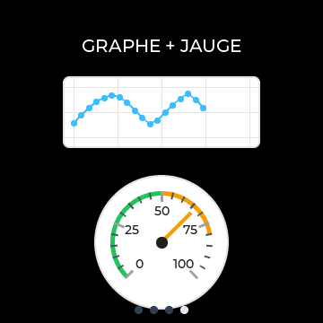